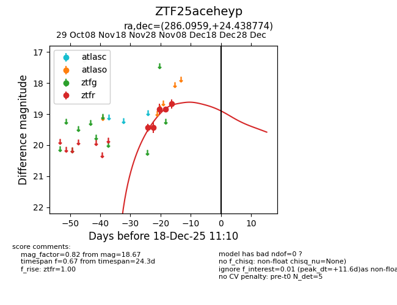
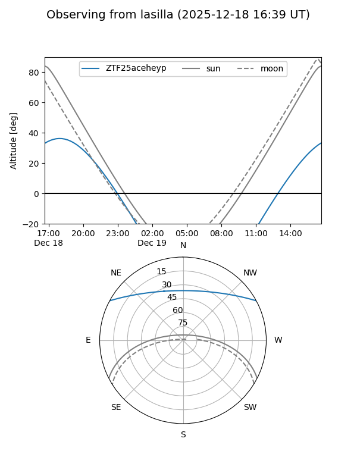
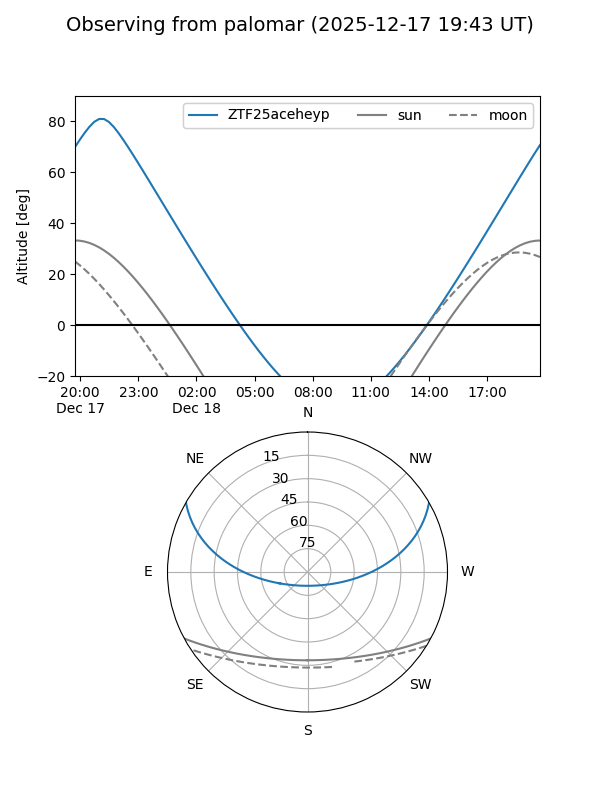
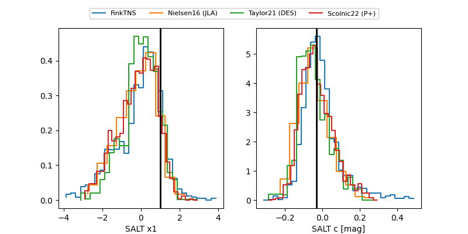

ZTF25aceheyp
Target ZTF25aceheyp at 2025-12-18 11:17
Aliases and brokers:
FINK: fink-portal.org/ZTF25aceheyp
Lasair: lasair-ztf.lsst.ac.uk/objects/ZTF25aceheyp
ALeRCE: alerce.online/object/ZTF25aceheyp
alt names
ZTF25aceheyp (ztf,fink_ztf)
Coordinates:
equatorial (ra, dec) = 286.0959,+24.43877
equatorial (HMS+DMS) = 19:04:23.01,+24:26:19.59
galactic (l, b) = (56.2418,+8.21609)
Photometry
last ztfr=18.67
5 ztfr detections
Lightcurve

Visibility


Additional plots
